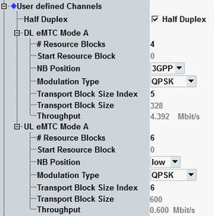

The parameters in this section configure user-defined channels for eMTC. Option R&S CMW-KS510 is required.
To display these settings, select the scheduling type "User-Defined Channels", see "Scheduling Type".
To configure the channels, proceed as follows (for UL and DL):
Select the cell bandwidth (see "Physical Cell Setup").
Configure half duplex or full duplex.
Select the number of allocated resource blocks (RB).
Select the RB position within the narrowband (NB).
Select the NB position.
Select the modulation type.
Select the transport block size index.
For valid parameter combinations and background information, see "User-Defined Channels for eMTC".
For carrier aggregation scenarios, you can configure the settings per component carrier.

Selects between half-duplex operation and full-duplex operation.
Remote command:Selects the number of allocated resource blocks and the position of the first allocated resource block within the narrowband.
Remote command:Selects the narrowband, see also Table "NB position values depending on bandwidth".
Remote command:Selects the modulation type. This parameter influences the transport block size index.
Remote command:Selects the TBS index. The resulting "Transport Block Size" in bits is displayed
Remote command:Displays the expected maximum throughput in Mbit/s (averaged over one frame).
Remote command:Only displayed in the main view: Effective channel code rate, i.e. the number of information bits (including CRC bits) divided by the number of physical channel bits on PDSCH/PUSCH.
Remote command: